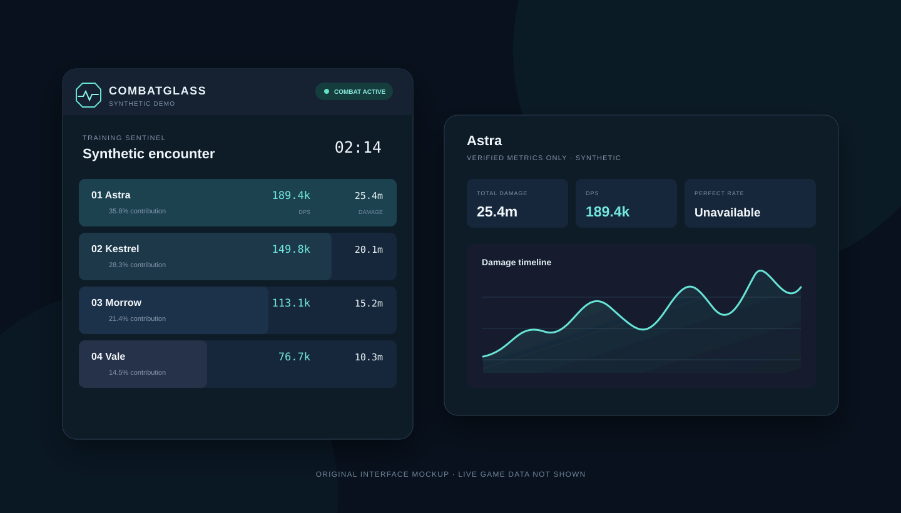

Ve el estado del combate al instante
Los estados activo, pausado y no compatible evitan información antigua o certezas inventadas.
Una interfaz de Windows discreta para encuentros legibles, análisis útil de habilidades e historial local, sin tocar el juego.
Diseñado primero para jugadores europeos y abierto a toda la comunidad global de AION 2.

La vista principal responde primero qué acaba de ocurrir. Las habilidades, la cronología y el diagnóstico siguen disponibles sin competir por atención.
Los estados activo, pausado y no compatible evitan información antigua o certezas inventadas.
Una jerarquía clara conduce de los totales a habilidades, críticos y contexto compatible.
Un historial limitado de encuentros permanece local y puede borrarse desde la aplicación.
El procesamiento y el historial habilitado permanecen en el equipo. No hay cuenta ni servicio en la nube.
Sin lectura de memoria, inyección, modificación de paquetes, proxy ni automatización de entradas.
Los datos de protocolo desconocidos o no verificados detienen la salida en vez de generar resultados engañosos.
Sin suscripción, DPS prémium, muro de pago ni servidor de licencias. Cualquier futuro café de apoyo será voluntario.
El modo Demo y la base local ya existen. La decodificación de AION 2 Global sigue desactivada hasta validar de forma independiente tráfico controlado.
No. Es una vista previa pública de desarrollo; no se publica ningún ejecutable, instalador ni archivo portátil.
No. La versión 0.x es exclusivamente local, sin cuentas, telemetría, subidas a la nube ni servidor de licencias.
No. La arquitectura prohíbe acceso a memoria, inyección, modificación de paquetes, proxy y automatización de entradas.
Ningún tercero puede garantizarlo. Las normas y su aplicación pueden cambiar; consulta los términos del juego y usa herramientas de terceros bajo tu responsabilidad.
Usa las plantillas públicas de incidencias, pero nunca adjuntes capturas de paquetes, tokens, registros privados ni información personal.
Idiomas de la interfaz: inglés, alemán, francés, español (España), portugués (Brasil) y ruso.
CombatGlass no está afiliado ni respaldado por NC. Un diseño pasivo no garantiza la seguridad de la cuenta. El aviso legal en inglés es el texto jurídico canónico.
Leer el aviso legal canónico en inglés